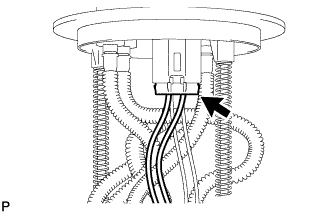
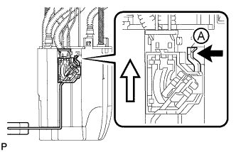
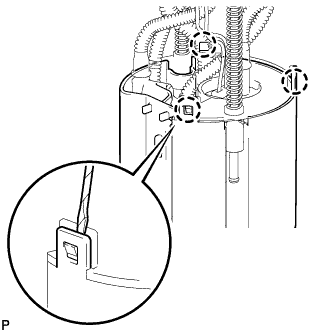
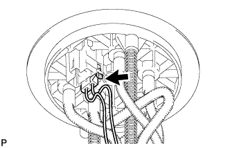
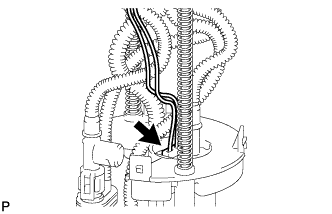
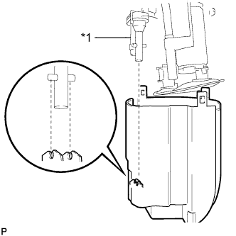
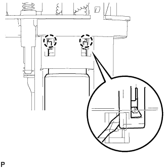

ТОПЛИВНЫЙ НАСОС (для моделей с двойным топливным баком) > РАЗБОРКА |
 |
| 1. СНИМИТЕ ДАТЧИК УРОВНЯ ТОПЛИВА В СБОРЕ |
|  |
Отсоедините разъем датчика уровня топлива.
|  |
Нажмите на захват датчика уровня топлива А. Затем сдвиньте датчик вверх, чтобы снять его.
 | Нажмите |
 | Сдвиньте |
| 2. СНИМИТЕ ПЛАСТИНУ ТОПЛИВОЗАБОРНИКА В СБОРЕ |
|  |
С помощью отвертки освободите 3 захвата из отверстий и снимите пластину топливозаборника.
| 3. СНИМИТЕ ЖГУТ ТОПЛИВНОГО НАСОСА |
|  |
Отсоедините разъем жгута проводов топливного насоса от пластины топливозаборника.
|  |
Отсоедините разъем жгута проводов топливного насоса от топливного насоса.
| 4. ОТСОЕДИНИТЕ ЭЖЕКТОР |
|  |
С помощью отвертки отсоедините эжектор от расширительного топливного бачка № 1.
| *1 | Насос-эжектор |
| 5. СНИМИТЕ ТОПЛИВНЫЙ НАСОС |
|  |
Освободите 2 захвата из отверстий с помощью отвертки и отсоедините топливный насос от пластины топливозаборника.
Снимите кольцевое уплотнение.
Снимите распорную втулку топливного насоса.